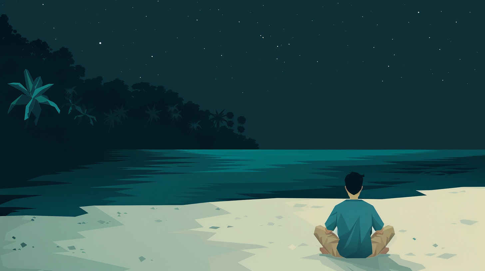
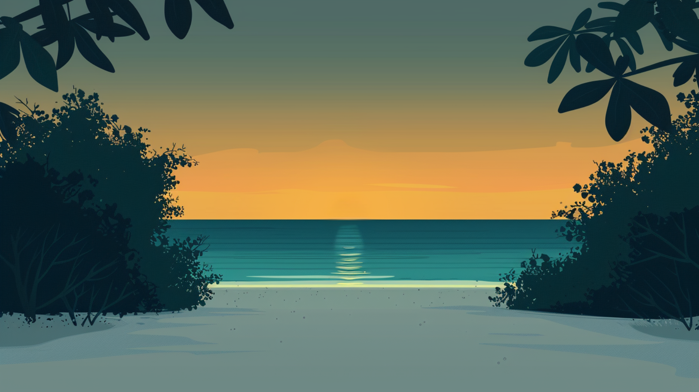
Antes de la primera palabra, ya existía la conexión.
Before the first word, there was already connection.
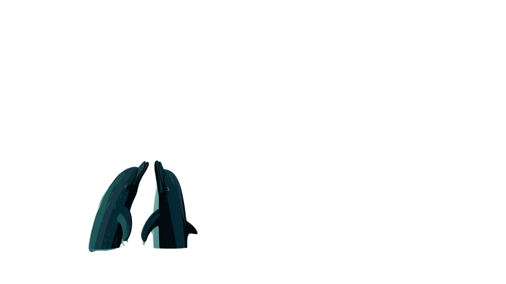
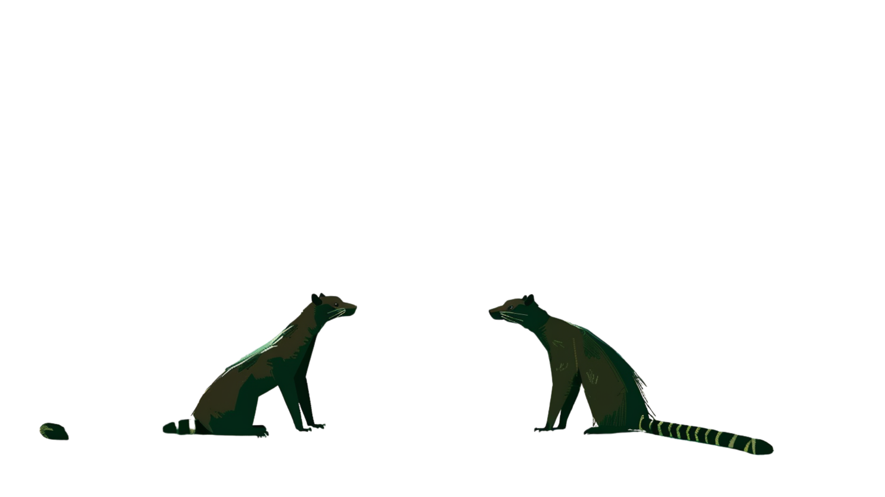
Los vestigios de la comunicación están presentes desde el inicio.
The vestiges of communication have always been here.
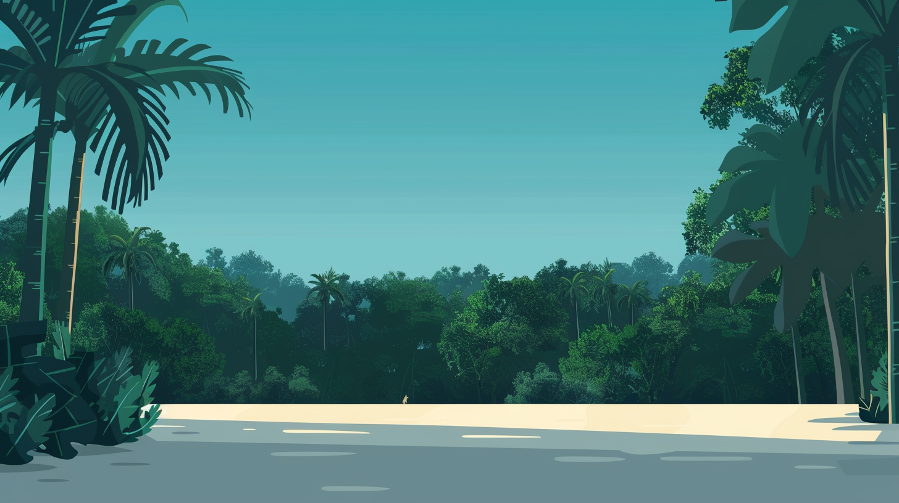
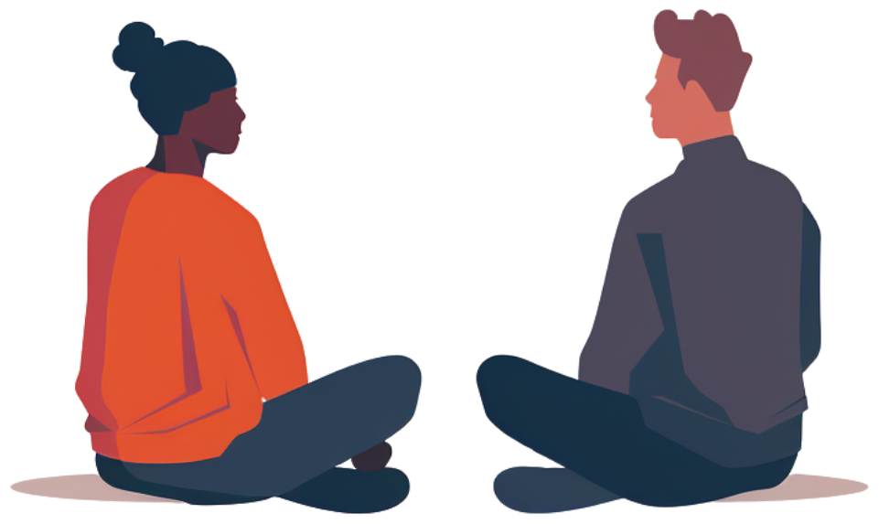
En nuestra mirada siempre hay una intención: establecer conexión. La comunicación es una acción.
In our gaze there is always an intention: to connect. Communication is an act.
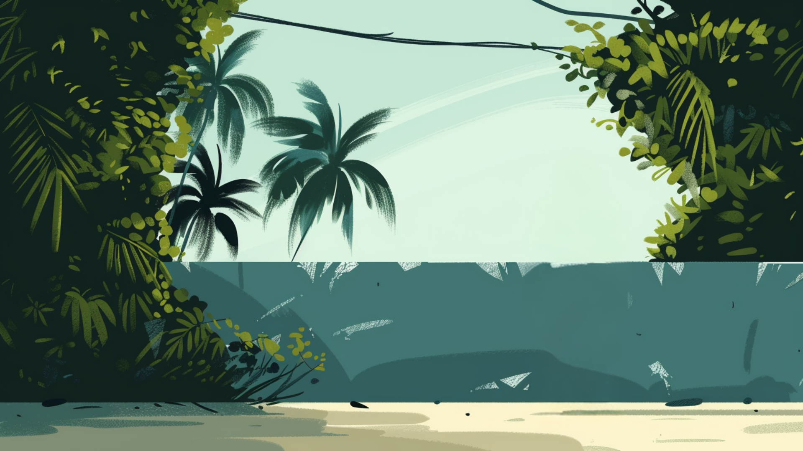
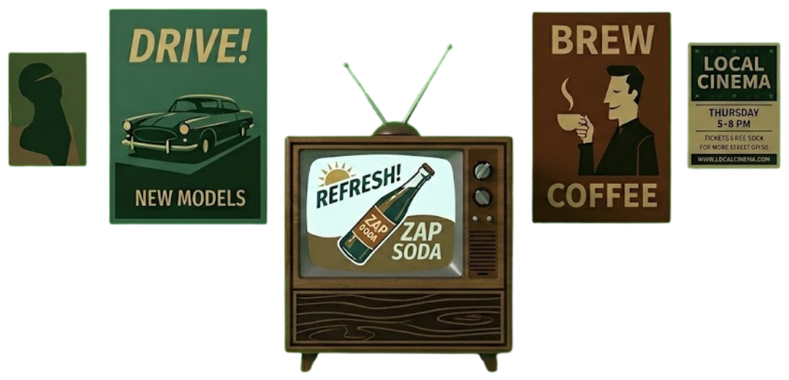
Pero en algún momento, la acción se volvió transacción.
But somewhere along the way, the act became a transaction.
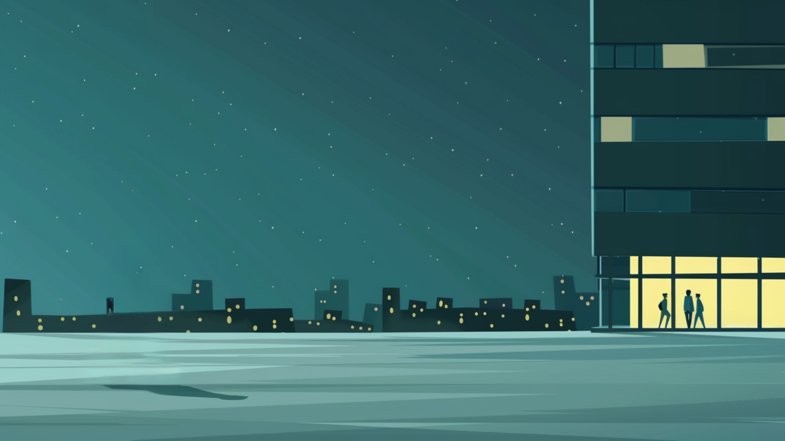
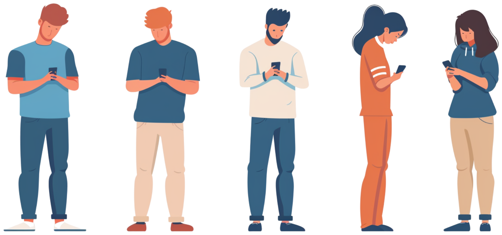
Una aceleración que comenzó mucho antes.
An acceleration that started long before.
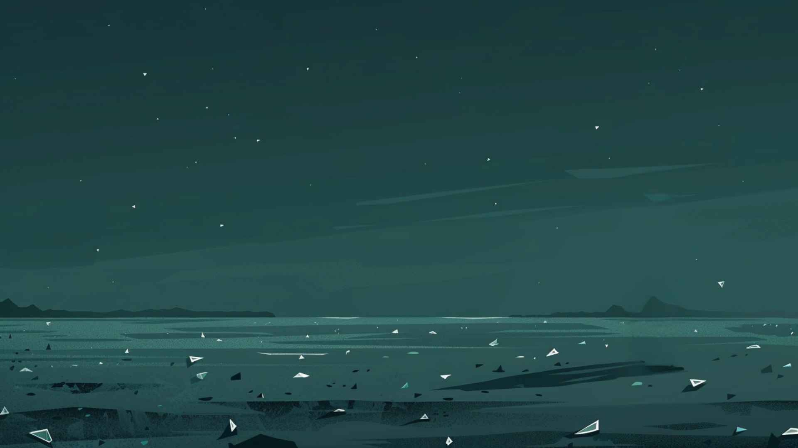
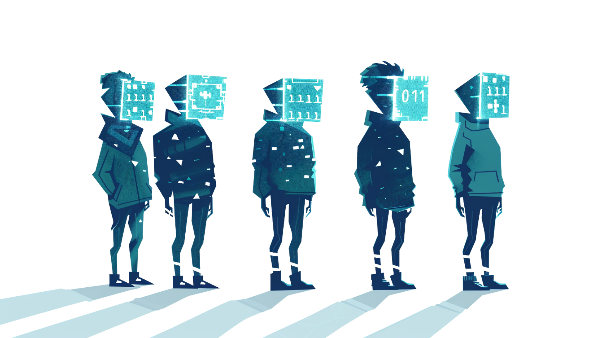
Cuando todos dicen lo mismo, nadie dice nada.
When everyone says the same thing, no one is saying anything.
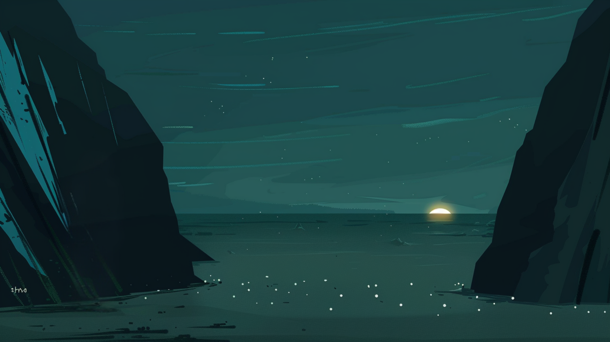
Pero en medio del caos, sigue existiendo la vida.
But in the middle of the chaos, life goes on.
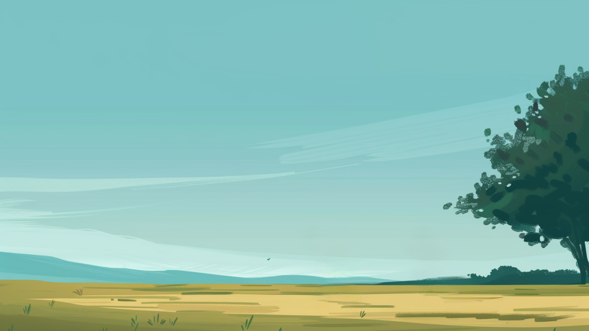
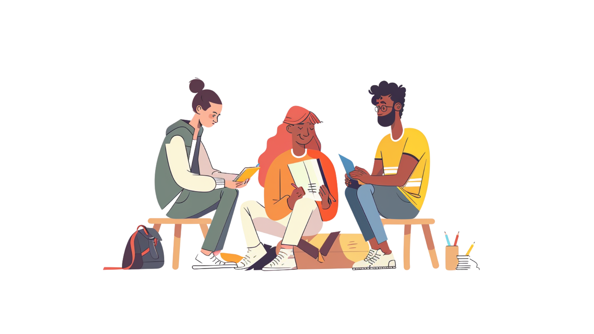
Porque en lo más profundo, lo que necesitamos es conexión.
Because at our core, what we need is connection.
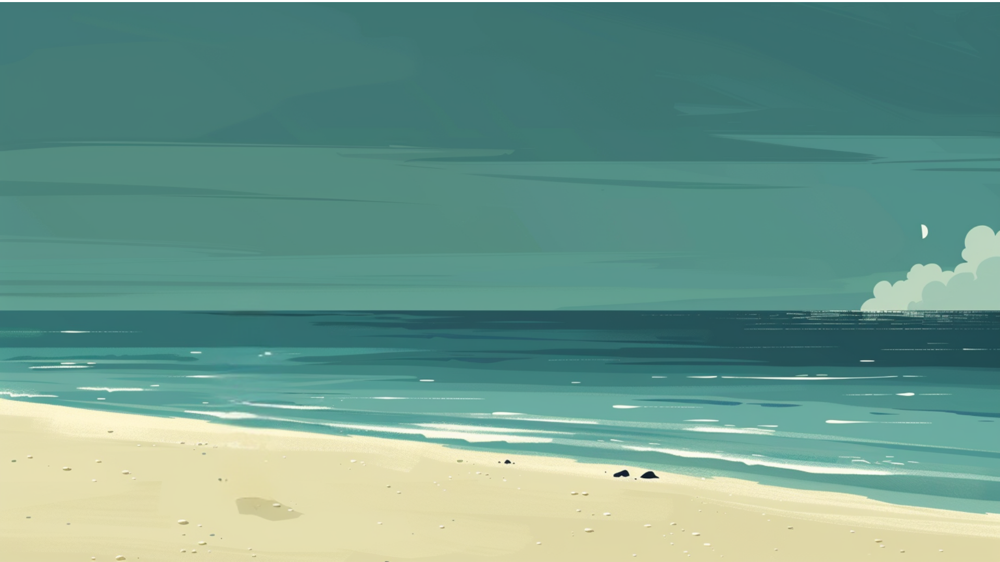
¿Cuándo fue la última vez que tu marca sonó a ti?
When was the last time your brand sounded like you?
Back to the site
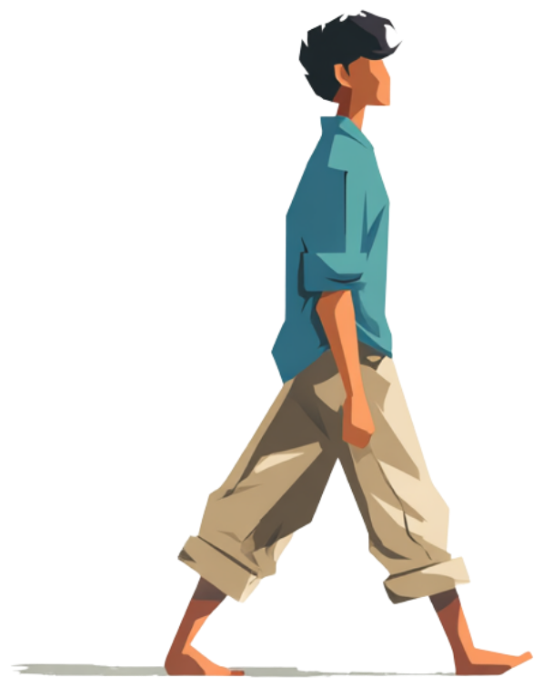
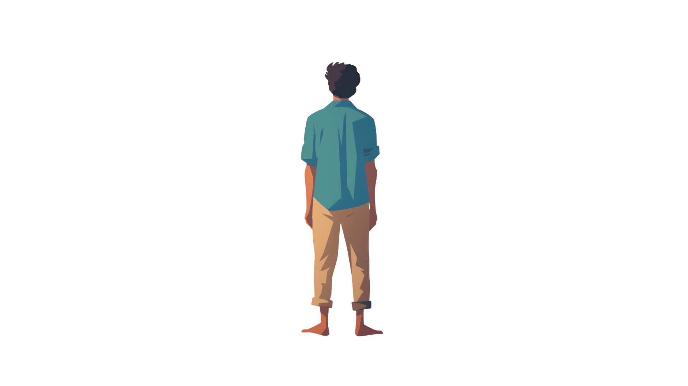